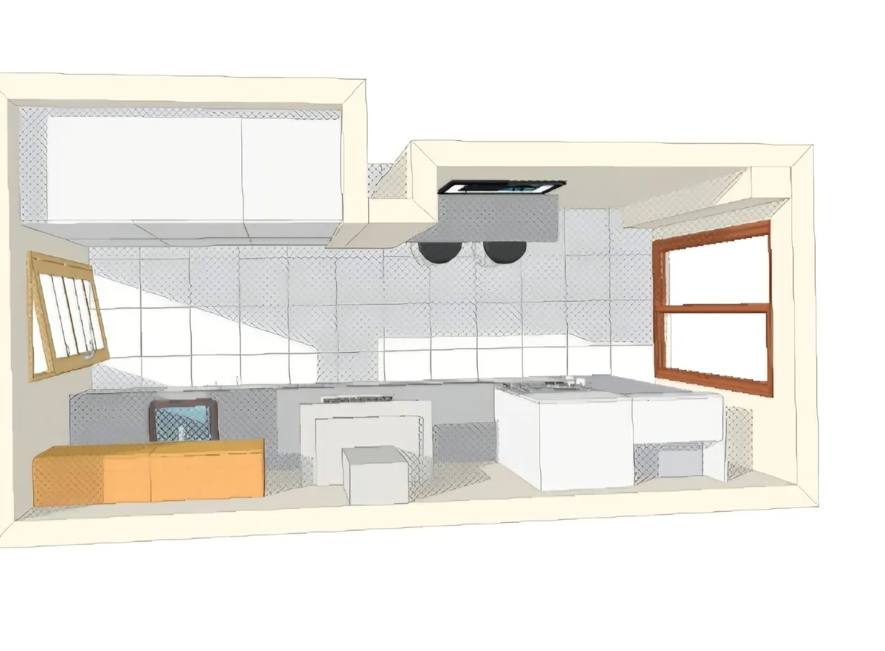

Diseño 3D para tu reforma en Sabadell
Ve el resultado de tu reforma antes de empezar la obra. Creamos el diseño 3D de tu proyecto en Sabadell y el Vallès Occidental para que decidas con total seguridad.

Decide sobre seguro con el diseño 3D
El diseño 3D es una recreación realista de cómo quedará tu cocina, tu baño o tu vivienda una vez terminada la reforma. Antes de tocar un solo ladrillo, podrás ver la distribución, los materiales, los colores y la iluminación, y hacer cambios sin coste.
En Modela y Reforma el diseño 3D va incluido en el presupuesto. Es nuestra forma de asegurarnos de que el resultado final coincide exactamente con lo que tienes en mente.
- Incluido en el presupuesto
- Cambios antes de empezar la obra
- Sin sorpresas en el resultado final
¿Qué es el diseño 3D de una reforma?
El diseño 3D es una infografía o render que reproduce tu espacio de forma realista a partir de las medidas reales de tu vivienda. A diferencia de un plano en 2D, te permite ver el ambiente en perspectiva, con volúmenes, texturas y luz, casi como una fotografía del resultado final. Es la mejor herramienta para tomar decisiones sobre distribución, mobiliario y acabados.
Cómo te ayuda a visualizar el resultado
Muchas dudas desaparecen al ver el proyecto en 3D: si el color de los muebles combina, si la isla de la cocina cabe bien, cómo queda el porcelánico de gran formato o dónde colocar los puntos de luz. Podemos probar distintas opciones y compararlas hasta dar con la que más te gusta. Así evitas arrepentimientos y aprovechas al máximo cada metro de tu casa.
Herramientas que utilizamos
Trabajamos con software profesional de diseño y modelado 3D que nos permite recrear cocinas, baños y viviendas completas con un alto nivel de detalle. Elaboramos planos de distribución acotados y vistas en 3D desde diferentes ángulos, integrando los materiales y referencias reales que vamos a instalar en tu reforma.
Incluido en tu presupuesto
Para nosotros el diseño 3D no es un extra: forma parte de nuestro servicio y va incluido en el presupuesto de la reforma. Pide cita y, tras la visita y la toma de medidas, prepararemos la propuesta 3D de tu proyecto en Sabadell o cualquier población del Vallès Occidental, sin compromiso.
Otros servicios de reforma
¿Quieres ver tu reforma en 3D?
Pide tu presupuesto gratuito y sin compromiso. El diseño 3D va incluido.